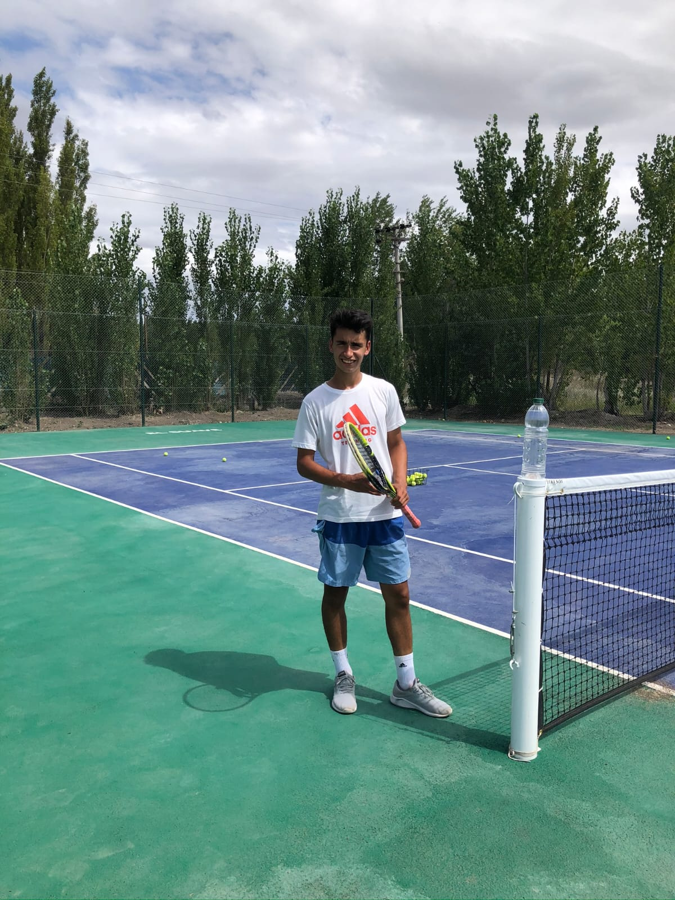

Hola a todos, bienvenidos a mi pagina web. Me presento soy Gianni Vidal, tengo actualmente, en el año
2023, 19 años y soy oriundo de General Roca, Rio Negro, una pequeña ciudad de 81534 habitantes, donde
casualmente aun sigo viviendo.
Lo mas interesante en este momento seria hablar de mis principios en este deporte, el TENIS, que tanto
amo y tanta felicidad me ha dado a lo largo de mi vida.
Comencé jugando cuando era pequeño, en la primera infancia, ya a mis cuatro años tomaba clases en la
escuelita de tenis de mi ciudad pero como es de esperarse a
tan corta edad veía al tenis como nada mas y nada menos que un hobby. Sin embargo, al pasar de los años
seguí con mi entrenamiento y encontré en este pasatiempo un lugar especial para mi.
Donde podia descargar mis malas energias, mis frustraciones y al mismo tiempo hallé un lugar para
autosuperarme. Es asi como decidí empezar a competir, me presenté en torneos importantes como
panamericanos, torneos llamados G3 entre otros, donde podía demostrar
por lo que me había esforzado tanto.
Luego de varios años jugando, tras sentirme perdido y querer vivir un poco mas de mi vida adolescente,
ya que el entrenamiento me tomaba cada vez mas horas del dia, decidí abandonar la competencia y
dedicarme exclusivamente a un juego mas social y casual.
Al finalizar el colegio, me di cuenta que mi mas grande pasión seguia siendo el tenis, por lo que
comenzó mi gran busqueda, lo que se convertiria en un futuro en mi profesion.
Tras hablarlo con mis padres, y recibir su pleno apoyo, comencé mis estudios en la ciudad de Neuquen,
hacia el profesorado de tenis.
Todo parecia estar mas que encaminado y en el momento menos esperado llega mi primera oferta laboral,
primero comenzaria como visitante y ayudante en las clases de tenis de profesores con alta reputación en
mi ciudad, para luego tener en este mismo club, Jockey Club de General Roca, la primera clase oficial
dictada unicamente por mi de tenis
Es asi que luego de dos años de arduas practicas y estudios, recibí mi titulo como profesor de tenis.
Luego de un año de clases, de conocer nuevos alumnos y afianzarme en mi elección, decido abrirme no solo
como profesor sino que ofrezco mas servicios, como lo es el encordado de raquetas y la venta de
elementos indispensables para el tenis, ya que desde mi vista como profesor, ex jugador y practicante
prometo dar la mejor calidad.
Agradezco que hayan llegado hasta aquí y los invito a acompañarme en este camino!
Gianni Vidal